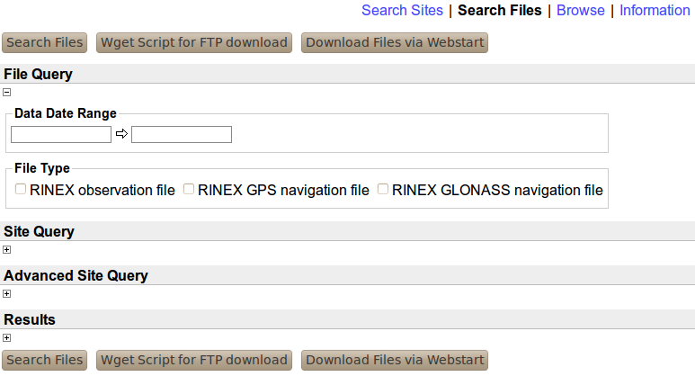
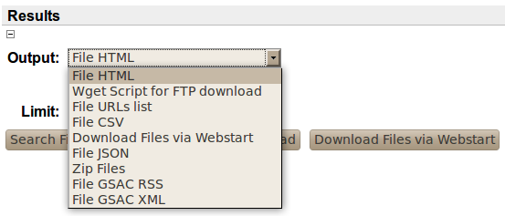
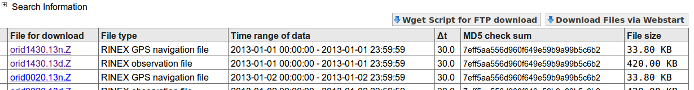

| Previous | Next |
The Search Files web page has the form to query about instrumental data files and products from sites, available with this GSAC server. You can search for instrument data files and products by date range of data, by data type, from particular sites, and with other choices.

The Data Date Range entry boxes work the same way as in the site search page, to select for instrument data files and products by date range of data.
Check one or more boxes in the File Type area to limit files found to those types.
Click on the [+] under Site Query to see all the same controls by site you see in the site search page; likewise you can open the Advanced Site Query choices with its [+].
The Results [+] shows the Output (format) choices for file searches:

The Output box provides a choice of formats for the query results. Choices include, for example, HTML (for a table in web pages of results), a CSV list, of files, a Linux wget script for one or more data files, and simple list of data file URLs, and a Zip file containing one or more data files.
The HTML table of results from a file search looks like:

Note the time range of the data, the file size, and the file's MD5 check sum value may be shown.
You can click on a file name below File for Download to download that one file.
Click on the tab Wget Script for FTP download to download a file called gsacwget.sh, with lines like
wget http://egelados.gein.noa.gr/services/GPS/GPS_DATA/2013/001/orid1430.13n.Z
wget http://egelados.gein.noa.gr/services/GPS/GPS_DATA/2013/001/orid1430.13d.Z
wget http://egelados.gein.noa.gr/services/GPS/GPS_DATA/2013/002/orid0020.13n.Z
These lines can be used as a script in Linux to download all the data files and product files listed in the table of file search results.
If you have Java Webstart installed, you may be able to download all the files in the table by clicking on the tab Download Files via Webstart. This relies on code outside of UNAVCO development, and UNAVCO cannot assure that it will function or function properly. This feature is offered for Windows users as an alternative to the one-step Linux zip file method.
Other choice of formats in the Search Files page include Files URLs list, a simple list of complete URLs for data files from the FTP or HTTP server associated with the GSAC (GSAC itself does not download files). The Wget Script for FTP download choice is the same as the tab in the file search results table, as is the Download Files via Webstart choice.
The File CSV search result file more information about each file, in a csv formatted file, like
#fields=site_4char_ID[type='string'],Data_Type[type='string'],MD5[type='string'],FileSize,PublishDate[type='date' format='yyyy-MM-dd HH:mm:ss'],URL[type='string'],dataStartTime[type='date' format='yyyy-MM-dd HH:mm:ss'],dataStopTime[type='date' format='yyyy-MM-dd HH:mm:ss'],sampleInterval
# Generated by UNAVCO GSAC Repository on 2014-02-12 19:52:27 +0000
MOPR,GNSS RINEX Observation QC Report,a257dd2929e8bb9d157be332612ddace,19918,2011-06-15 00:00:00,ftp://data-out.unavco.org/pub/rinex/qc/2009/197/mopr1970.09S,2009-07-16 00:00:00,2009-07-16 23:59:45,0.0,Mona Island Puerto Rico 1HZ
MOPR,GNSS RINEX Observation (Hatanaka Unix Compressed),87e462886411b2e9c9af26b4b70370ec,634297,2011-06-15 00:00:00,ftp://data-out.unavco.org/pub/rinex/obs/2009/197/mopr1970.09d.Z,2009-07-16 00:00:00,2009-07-16 23:59:45,15.0,Mona Island Puerto Rico 1HZ
The choice Zip Files should make one new file called gsacresults.zip which contains all the data files listed in the table of file search results, zipped together, which you can download. If your list of files found is not too long, this is a fast way to get a collection of data files. Caution: before using this result, make your search with a web page table of results to see the total size of the files found, listed at the bottom of the table of results from a file search.
At the top of the table of results from a file search is a [+] Search Information. Click on it to see all the result output format choices. Clicking on one will repeat your most recent search, only now making a new output format.
Next.| Previous | Next |